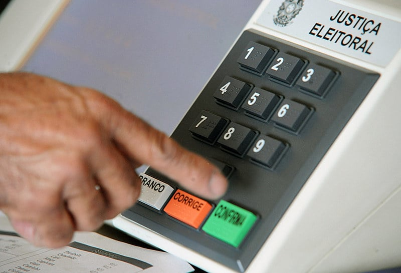

Política
A política brasileira passou por diversas transformações nas últimas décadas...
Uma das curiosidades mais interessantes é sobre o processo eleitoral...
- O voto é obrigatório no Brasil desde 1932.
- O Brasil já teve 38 presidentes.
- O título de eleitor eletrônico foi criado em 1996.